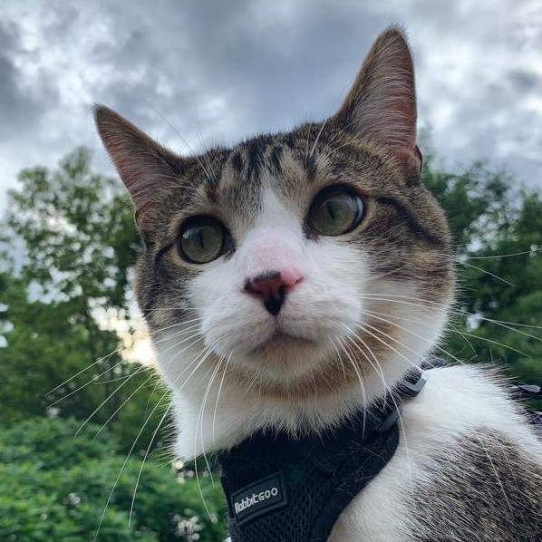

I am Sullivan!
Hi, I'm Sully! I'm an indoor kitty who loves scratchies from his mama after she gets home from a
long days work at the doc's office! Some of my favorite hobbies include (but are not limited to
🐱) going for adventurous walks on a nice sunny day, eating catnip, playing with my best
buddies, Moose, Cheeto, and Scooter, and cuddling with my mom! You can catch my sunbathing in my
window hammock, laying on moms bed, or just roaming my house looking for those conniving
birdies! 🐦 Check out my Instagram and Tick Tock for the latest cat content and to keep up with
my crazy cat life!